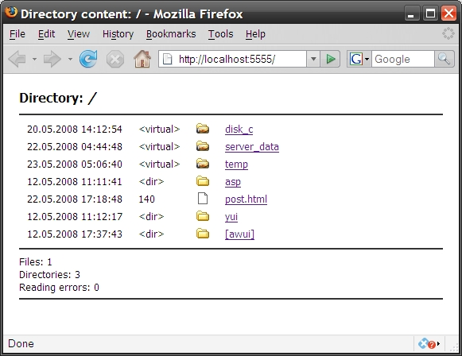

Title: Power of C++ - developing a portable HTTP server with Python interpreter using Boost, TinyXML Author: Artem Kustikov Email: kustikoff@tut.by Member ID: 2332143 Language: C++ Platform: Windows, Ubuntu Linux Technology: STL, Boost.Thread, Boost.Python, TinyXML Level: Intermediate Description: This article describes portable networking library (ahttp) and small HTTP server - result of modern C++ programming approaches investigation Section C/C++ Language SubSection General License: CPOL

First of all - this article is not a presentation of stable application - ahttpserver just is a result of my creative investigation of modern C++ programming approaches. At my current work I cannot satisfy my curiosity and taste for new programming technologies learning and it was root cause of this project starting - I have started it to refresh/extend and fix my C++ skills.
HTTP server application was selected as a complex set of functional parts:
Also several targets were selected at project beginning:
At present ahttpserver project contains three main parts:
ahttplib static library (aconnect and ahttp
namespaces); ahttpserver - server application core;python_handler - module for server-side Python scripts execution.
So let's start from simple example of aconnect library in action - following
code presents very simple echo server.
#include "aconnect/aconnect.hpp"
#include "aconnect/util.hpp"
using namespace aconnect;
// global server instance
Server server;
void threadProc (const ClientInfo& client) {
static EndMarkSocketStateCheck check;
string request = client.getRequest (check);
request.erase ( request.find(check.endMark()) );
string response;
bool stopServer = false;
if (util::equals (request, "STOP") ) {
response = "Processed";
stopServer = true;
} else {
response = "Echo: " + request;
}
// write response
client.writeResponse(response);
if (stopServer)
exit (0);
}
// test it: http://localhost:8888/
int main (int argc, char* args[])
{
Initializer init;
FileLogger logger;
// {timestamp} - will be replaced with generated timestamp (example: 22_05_2008_20_17_35),
// third parameter - max. size of log file - it will be rotated automatically
logger.init (Log::Debug, "c:\\temp\\server_log_{timestamp}.log", 4194304);
// init command server
ServerSettings settings;
settings.socketReadTimeout =
settings.socketWriteTimeout = 300; // sec
// init HTTP server
server.setLog ( &logger);
server.init (8888, threadProc, settings);
server.start(); // started in child thread
server.join();
}
Initializer is an RAII-style guard to init OS-depended network functionality - under Windows
it calls WSAStartup in constructor and WSACleanup in destructor.
Server is a main functional class - it creates TCP server socket, binds it to
selected port (8888 in code) and start listening on this port. Server can be started in background
thread (as in example) or in main execution thread: server.start (true).
At server initialization ServerSettings object is applied to server.
// server settings storage - used to setup default server settings
struct ServerSettings
{
int backlog;
int domain;
bool reuseAddr;
bool enablePooling;
int workersCount;
int workerLifeTime; // sec
int socketReadTimeout; // sec
int socketWriteTimeout; // sec
// default settings
ServerSettings () :
backlog (SOMAXCONN), // backlog in listen() call
domain (AF_INET), // domain for 'socket' function call
reuseAddr (false), // SO_REUSEADDR flag setup on server socket
enablePooling (true), // show whether create worker-threads pool or not
workersCount (500), // maximum worker-threads count
workerLifeTime (300), // thread in pool lifetime
socketReadTimeout (60), // server socket SO_RCVTIMEO timeout
socketWriteTimeout (60) // server socket SO_SNDTIMEO timeout
{ }
};
Each accepted TCP connection is processed in background worker thread - portable
Boost.Thread library us used.
Simple threads pool implemented in aconnect::Server using
boost::mutex and
boost::condition.
If enablePooling field in server settings is true then when initial TCP interaction is finished worker
thread starts waiting for new request during workerLifeTime time. If no requests found when timeout ends then
thread is removed from pool.
When server accepted client TCP connection then it fills ClientInfo object with
client related data.
struct ClientInfo
{
port_type port; // int
ip_addr_type ip; // unsigned char[4]
socket_type socket; // OS-depended, under Win32 - SOCKET, Linux - int
class Server *server;
};
After client information loading execution is transfered to worker thread
(new or borrowed from pool) that executes thread procedure (threadProc in code).
FileLogger - aconnect::Logger interface implementation to log messages to files.
aconnect::Logger is
a simple example of logging functionality developed in log4... manner - it contains
set of logging methods: info, warn, error to log message with appropriate level.
ConsoleLogger writes messages to std::cout and FileLogger writes messages
to file, FileLogger can rotate files when maximum file size achieved.
FileLogger initialization is too simple - just define log level, path to file and
maximum size of one log file (default size: 4 Mb).
aconnect library was developed at first turn - besides Server class it contains set of utility
(types definitions, socket control, string comparison, date/time functions).
After TCP server implementation ahttp library was developed - this library
contains HttpServer definition and set of HTTP protocol related functionality.
To start ahttp::HttpServer one need have filled HttpServerSettings
instance (see listening) - even for this simple server there are many settings. As a result
the preferred place to store these settings is a XML file which can be updated by hands and
loaded quickly. See example of settings file in sources ahttpserver sources
(out\server.config file). Some settings are described in this file, the others can be
understood from context.
class HttpServerSettings
{
public:
HttpServerSettings();
~HttpServerSettings();
void load (aconnect::string_constptr docPath) throw (settings_load_error);
...
protected:
aconnect::ServerSettings settings_;
aconnect::port_type port_;
aconnect::port_type commandPort_;
aconnect::string rootDirName_;
aconnect::string appLocaton_;
// logger
aconnect::Log::LogLevel logLevel_;
aconnect::string logFileTemplate_;
size_t maxLogFileSize_;
bool enableKeepAlive_;
int keepAliveTimeout_;
int commandSocketTimeout_;
size_t responseBufferSize_;
size_t maxChunkSize_;
directories_map directories_;
aconnect::str2str_map mimeTypes_;
aconnect::Logger* logger_;
aconnect::string serverVersion_;
global_handlers_map registeredHandlers_;
bool firstLoad_;
aconnect::string directoryConfigFile_;
};
At present ahttp::HttpServer has following features:
Server has modular architecture - new functionality can be added as new handler.
Handlers are connected to server by HttpServerSettings - <handlers> section
in configuration file. Handlers are applied to file extensions (".py" for example, "." - empty extension)
all to all files from current virtual directory ("*").
Each handler has main processing function:
HANDLER_EXPORT bool processHandlerRequest (ahttp::HttpContext& context);If this function returns true (request completed) - processing of HTTP handler will be stopped after this function call. In other case - next registered handler will be applied (this mode can be used in cache/authentication/extended logging modules).
As a result at time of ahttpserver development I have investigated set of useful libraries which I can use in future in professinal work. Firstly I want to mention boost libraries Thread, Filesystem and String Algorithm - each of them is an great thing and contains many useful functionality for everyday programming tasks. Boost Python Library is a the perfect tool to write own Python modules - the library's use of advanced metaprogramming techniques simplifies its syntax for users, so that wrapping code takes on the look of a kind of declarative interface definition language (IDL).
Working on this application is not stoppped yet - there are several uncompleted (planned) tasks:
2008-05-29 Version 0.1 published.